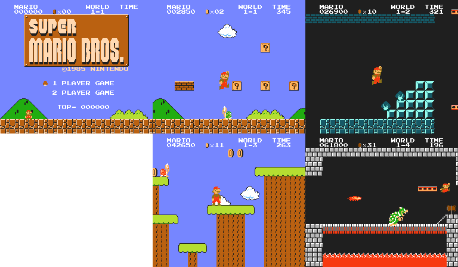
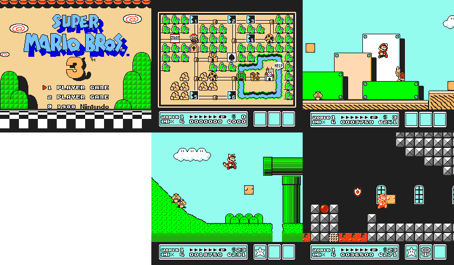

The Nintendo 64
Personal Favourites: Luigi's Mansion, Super Mario Sunshine, Mario Kart Double Dash
Personal Worst: N/A
Development of the Nintendo 64
dummy text
Release of the Nintendo 64
dummy text
The 64DD
dummy text
Legacy
dummy text
Console Gallery
The Ultra 64 prototype (presumably NUS-001), unreleased, but planned for 1995
The original Nintendo 64, NUS-001, released in June 1996

The N64 Disk Drive, released in December 1999

Games Gallery (Gameplay captured with bsnes)
Super Mario 64
Mario Kart 64

Ocarina of Time
GoldenEye

Donkey Kong 64